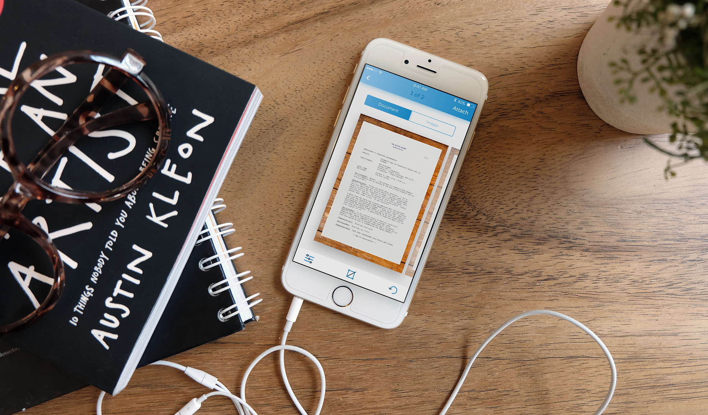

2016 ✴ Mobile app UI design, Branding
Enadoc 365
Enadoc, a cloud-based enterprise document management system in the web, extends its offerings with the introduction of Enadoc 365. This straightforward document scanning app, available for free on iOS, empowers users to effortlessly scan documents and share them via email or directly upload them to Enadoc.
My role
I served as the sole designer, working alongside the CEO and one iOS engineer to take it from zero to one. My responsibilities included the branding, UI, and UX design of the app.
Branding
Given its nature as a personal app, the brand identity features friendlier colors, typography, and illustrations compared to the web app. Additionally, I crafted custom icons to strengthen its brand presence.

Process
- Design explorations: Using sketches with pen and paper, I explored different options for navigation and information architecture.
- UI Patterns: I referred to iOS guidelines as well as similar apps in the market to leverage established patterns.
- Usability testing: Because of time constraints, instead of testing with actual users, I tested the prototype with colleagues.
- Design delivery: Design documentation and annotations were especially crucial as the engineer I was working with was based in a different country. I was also heavily involved in QA as the app started to take shape.
- Go-to market: I worked on the landing page as well as how-to articles for the app.
Tools used
Sketch, Marvel, Adobe Illustrator